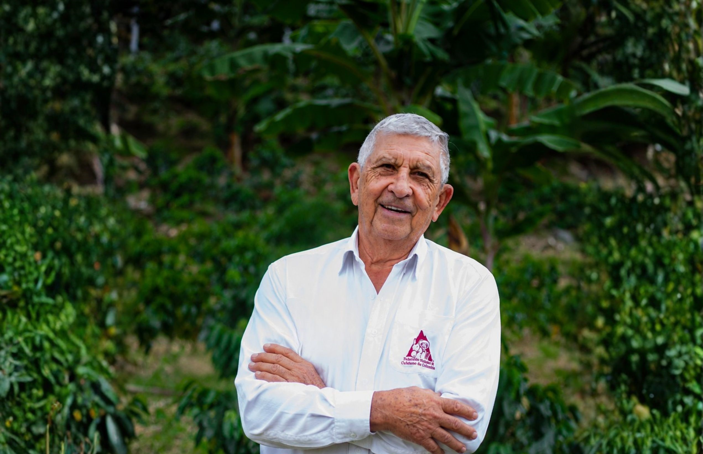

Ramón Medina
Productor de tercera generación.
Detrás de cada cosecha está el trabajo de muchas familias locales, el esfuerzo de mi familia en nuestras fincas y una historia cafetera que seguimos cuidando con orgullo.
Origen
Mistrató, Risaralda
Fincas
La Estrella y El Tango
Altitud
Aprox. 1.550 m s. n. m.